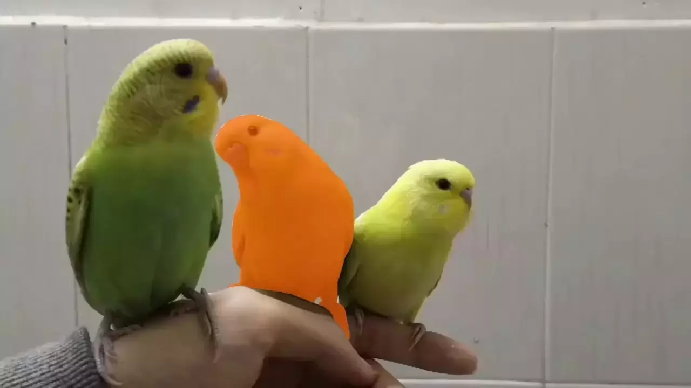

Shuting He
Dr.
Short Biography


News
- [09, 2025] Selected into Stanford University's list of the World's Top 2% Scientists.
- [09, 2025] 2 papers accepted to
NeurIPS 2025 - [09, 2025] Serving as an
Area Chair for CVPR 2026 - [08, 2025] 1 paper accepted to
TPAMI - [07, 2025] 3 papers accepted to
ACMMM 2025 - [07, 2025] Serving as an
Area Chair for BMVC 2025 - [06, 2025] 2 papers accepted to
ICCV 2025 , with one paper selected as Highlight - [05, 2025] 1 paper accepted to
ICML 2025 as Oral - [04, 2025] 1 papers accepted to
TIFS - [03, 2025] 1 papers accepted to
SIGIR 2025 - [02, 2025] 1 papers accepted to
CVPR 2025 - [01, 2025] 3 papers accepted to
AAAI 2025
Selected Publications [Google Scholar]
MeViS: A Multi-Modal Dataset for Referring Motion Expression Video SegmentationHenghui Ding, Chang Liu, Shuting He✉️, Kaining Ying, Xudong Jiang, Chen Change Loy, Yu-Gang Jiang✉️ IEEE Transactions on Pattern Analysis and Machine Intelligence (TPAMI), 2025. ✉️ Corresponding Author |
|
ReferSplat: Referring Segmentation in 3D Gaussian SplattingShuting He, Guangquan Jie, Changshuo Wang, Yun Zhou, Shuming Hu, Guanbin Li, Henghui Ding International Conference on Machine Learning (ICML), 2025. |
|
SCORE: Scene Context Matters in Open-Vocabulary Remote Sensing Instance SegmentationShiqi Huang, Shuting He, Huaiyuan Qin and Bihan Wen IEEE International Conference on Computer Vision (ICCV), 2025. |
|
Prompt-Softbox-Prompt: A Free-Text Embedding Control for Image EditingYitong Yang, Yinglin Wang✉️, Tian Zhang, Jing Wang, Shuting He✉️ ACM International Conference on Multimedia (ACM MM), 2025. ✉️ Corresponding Author |
|
Decoupling Static and Hierarchical Motion Perception for Referring Video SegmentationShuting He, Henghui Ding IEEE Conference on Computer Vision and Pattern Recognition (CVPR), 2024. |
|
SegPoint: Segment Any Point Cloud via Large Language ModelShuting He, Henghui Ding, Xudong Jiang, Bihan Wen European Conference on Computer Vision (ECCV), 2024. |
|
RefMask3D: Language-Guided Transformer for 3D Referring SegmentationShuting He, Henghui Ding ACM International Conference on Multimedia (ACM MM), 2024. |
|
Context-Aware Integration of Language and Visual References for Natural Language TrackingYanyan Shao, Shuting He, Qi Ye, Yuchao Feng, Wenhan Luo, Jiming Chen IEEE Conference on Computer Vision and Pattern Recognition (CVPR), 2024. |
|
Dual-head Genre-instance Transformer Network for Arbitrary Style TransferMeichen Liu, Shuting He, Songnan Lin, Bihan Wen ACM International Conference on Multimedia (ACM MM), 2024. |
|
|  |
MeViS: A Large-scale Benchmark for Video Segmentation with Motion ExpressionsHenghui Ding, Chang Liu, Shuting He, Xudong Jiang, Chen Change Loy IEEE International Conference on Computer Vision (ICCV), 2023. |
 |
MOSE: A New Dataset for Video Object Segmentation in Complex ScenesHenghui Ding, Chang Liu, Shuting He, Xudong Jiang, Philip H.S. Torr, Song Bai IEEE International Conference on Computer Vision (ICCV), 2023. |
Primitive Generation and Semantic-related Alignment for Universal Zero-Shot SegmentationShuting He, Henghui Ding, Wei Jiang IEEE Conference on Computer Vision and Pattern Recognition (CVPR), 2023. |
|
Semantic-Promoted Debiasing and Background Disambiguation for Zero-Shot Instance SegmentationShuting He, Henghui Ding, Wei Jiang IEEE Conference on Computer Vision and Pattern Recognition (CVPR), 2023. |
|
Prototype Adaption and Projection for Few- and Zero-shot 3D Point Cloud Semantic SegmentationShuting He, Xudong Jiang, Wei Jiang and Henghui Ding IEEE Transactions on Image Processing (TIP), 2023. |
|
VGSG: Vision-Guided Semantic-Group Network for Text-based Person SearchShuting He, Hao Luo, Wei Jiang, Xudong Jiang, and Henghui Ding IEEE Transactions on Image Processing (TIP), 2023. |
|
Region Generation and Assessment Network for Occluded Person Re-IdentificationShuting He, Weihua Chen, Kai Wang, Hao Luo, Fan Wang, Wei Jiang and Henghui Ding IEEE Transactions on Information Forensics and Security (TIFS), 2023. |
|
TransReID: Transformer-based Object Re-IdentificationShuting He, Hao Luo, Pichao Wang, Fan Wang, Hao Li, Wei Jiang IEEE International Conference on Computer Vision (ICCV), 2021. |
Selected Awards and Honors
- CVPR 2023 Doctoral Consortium, 13% Acceptance Rate
- 1st Place, IEEE CVPR 2021 AI CITY Challenge
- 1st Place, IEEE IJCAI iQIYI 2020 iCartoonFace Challenge
- 1st Place, IEEE ECCV 2020 Visual Domain Adaptation Challenge
Activities
- Area Chair: CVPR, BMVC.
- Journal Reviewer: TPAMI, IJCV, TIP, TNNLS, TMM, TCSVT, CVIU, etc.